From prison to purpose.
Positive Outreach Development Society walks with people from the inside out: preparing them for release, standing with them when they come home, and building a community that gives a real second chance.
501(c)(3) nonprofit, EIN 99-2858905. Serving Atlanta and Georgia.
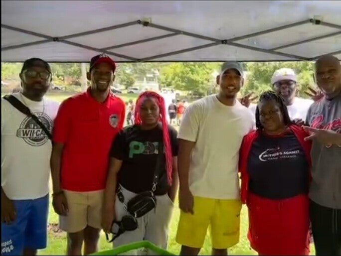
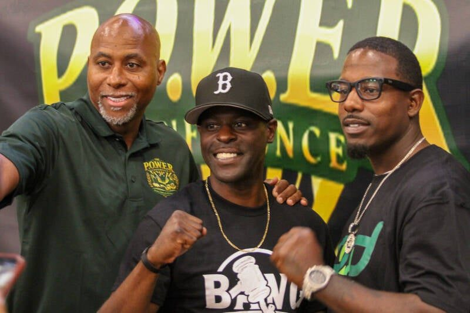
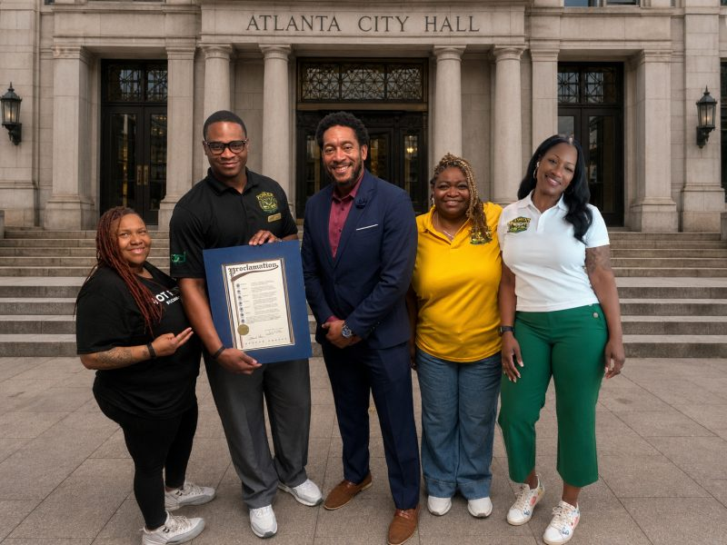
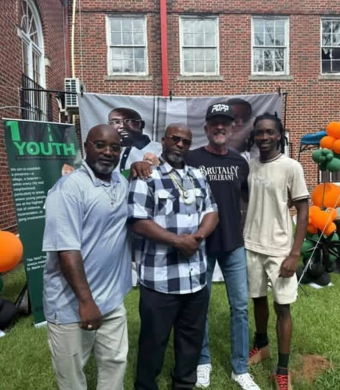
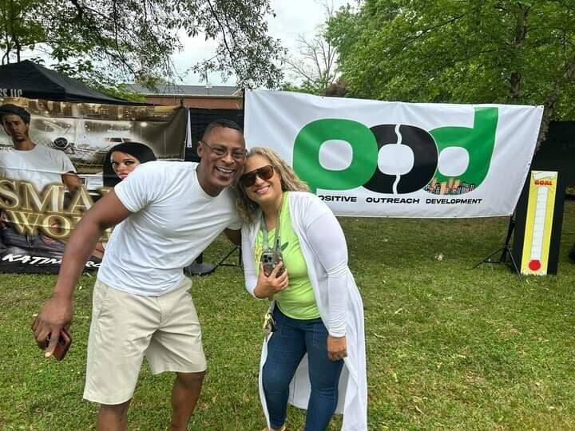
Restoring hope. Rebuilding lives.
Returning citizens deserve more than a second chance. They deserve preparation, opportunity and the tools to succeed. Our work is rooted in mentorship, evidence-based cognitive programming and reentry resources, delivered by credible messengers: people whose own lives show what change looks like.
We work inside correctional facilities and in the neighborhoods people come home to, alongside law enforcement, parole, local government, churches and grassroots groups. It takes a village.
Reentry doesn’t start at the door. It starts with the process of habilitation and rehabilitation. The work comes first.POD Society
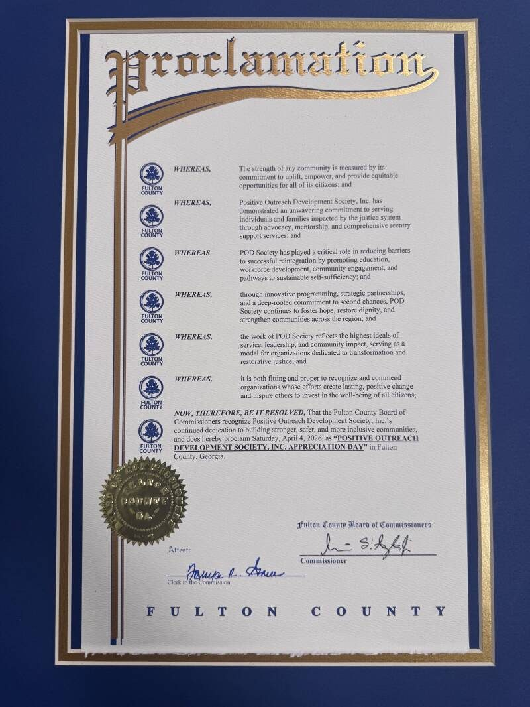
Fulton County, Georgia | April 4, 2026
April 4 is Positive Outreach Development Society Day.
The Fulton County Board of Commissioners designated April 4 (404 Day) as Positive Outreach Development Society Day, recognizing our service, community leadership and commitment to positive change.
What we do
Programs that start before release and keep going after it.
FORGE
A 36-week peer-mentor program inside prison that trains men to lead, mentor and keep the peace in their dorms.
About FORGEReentry Home Coming
A safe, structured place to live for people coming home, with the FORGE Successful Reentry program and job skills classes.
See the planMind C.A.R.E.
Cognitive Assessment for Reentry: mental health and substance use support before release, led by forensic peer specialists.
Read moreS.I.P.P.
The Support Incarcerated Population Program, for families who want their loved one connected to POD before release.
Read moreWorkforce development
Employment resources and employer partners for returning citizens, and job skills classes at the Reentry Home.
Job skillsCommunity engagement
The P.O.W.E.R. Conference, Both Sides of the Gun, youth outreach, networking pop-ups and family reunification events.
Events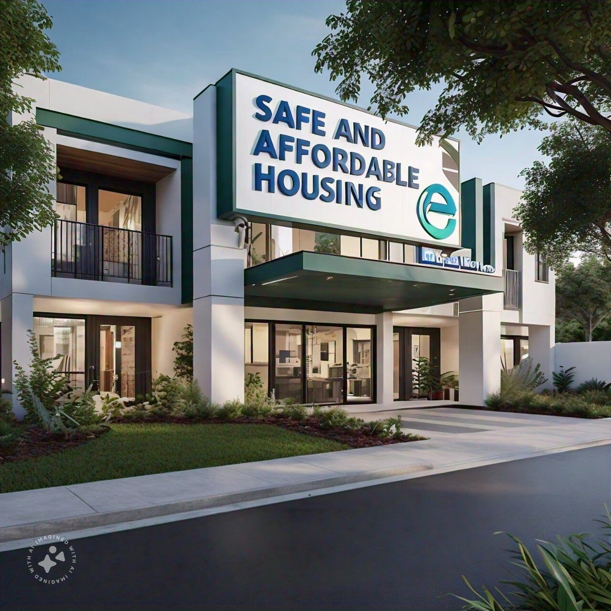
A place to land. A plan to succeed.
The first weeks home decide a lot. Too many people leave prison with nowhere safe to sleep and no plan for work. POD Society is building a reentry home for people coming out of prison who need a place to stay and help putting their lives back together.
Residents will live in a structured, supportive house and follow FORGE Successful Reentry, a program built on the same philosophy as FORGE inside, with job skills classes and mentors who have walked the same road.
Recent
-
Honored at the Midnight Basketball League’s 40th anniversary
POD Society was recognized in Atlanta for our continued dedication to safer, stronger communities.
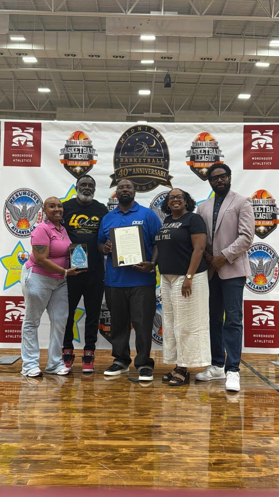
-
Both Sides of the Gun: Bridging the Divide
Our third gun violence prevention event, at Lakewood Church of Hope, brought victims, returning citizens and community leaders together for testimony, panels and resources.
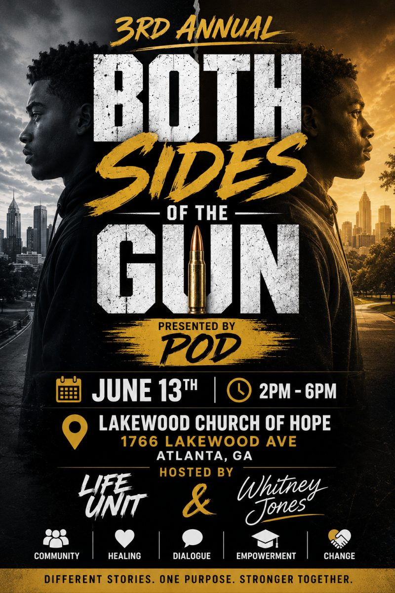
-
Second Chance Awareness Month at the Board of Pardons and Paroles
POD Society presented our work and impact to the Georgia State Board of Pardons and Paroles.
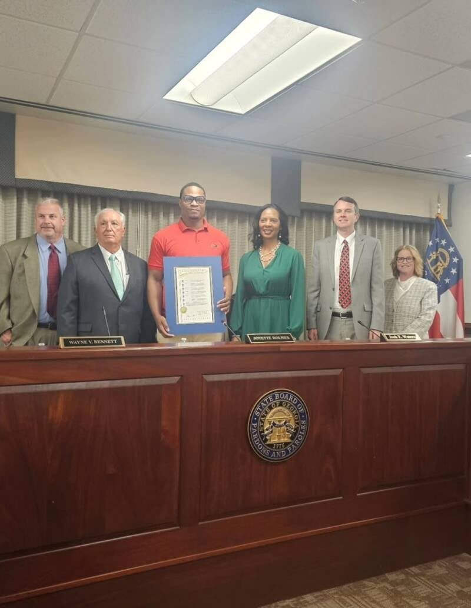
-
P.O.W.E.R. Conference 2026
Positive Outreach Will Enhance Reentry: a reentry simulation and awareness event on Post-Incarceration Syndrome (PICS) at Atlanta City Hall’s Old Council Chambers.
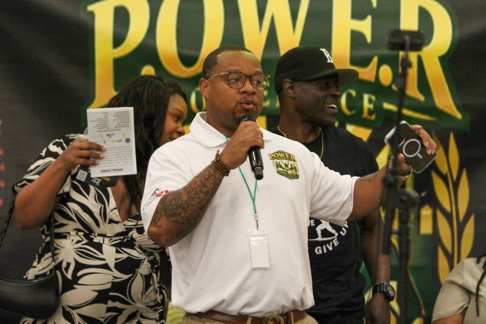
Where do you fit?
Coming home
Housing, work, legal and parole help, and a mentor who has been there.
Resources for returning citizensPartners and supporters
Employers, churches, agencies and donors who want fewer people going back.
Get involved